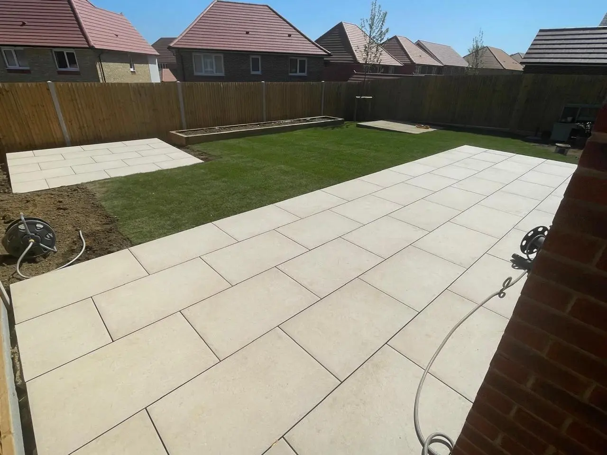
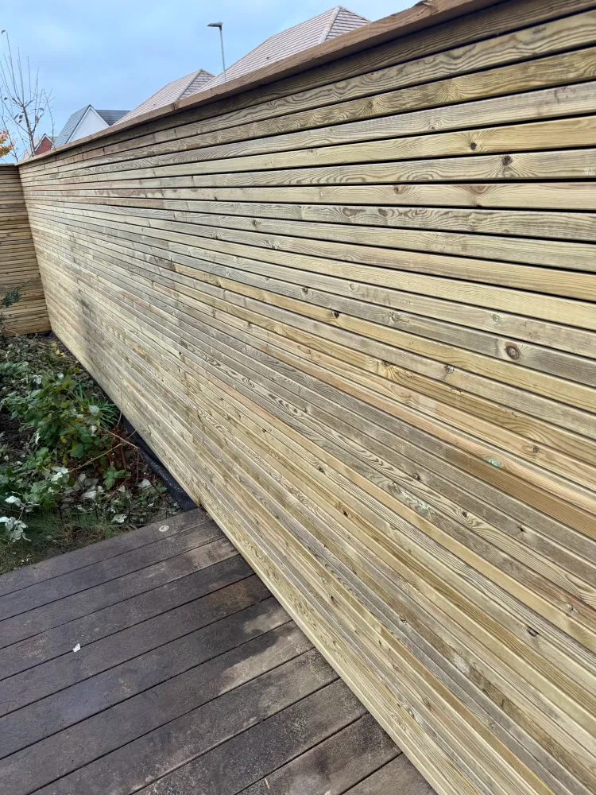

A Sterling Landscapes creates extraordinary outdoor spaces for discerning homeowners across West Sussex, East Sussex and Surrey. From concept through to completion, every project is approached with meticulous attention to detail, expert craftsmanship and a commitment to exceeding expectations.
Every garden tells a story. At A Sterling Landscapes, that story is one of precision, quality materials and design-led thinking. Whether it is a sweeping natural stone patio, a bespoke water feature or a complete garden transformation, the team delivers results that stand apart.
With a dedicated team of up to ten skilled professionals, A Sterling Landscapes has the capacity and expertise to take on ambitious projects — the kind that redefine what an outdoor space can be.
About Us
A comprehensive range of premium landscaping services, each delivered to the highest standard.

Natural stone, porcelain and bespoke paving solutions designed to complement your home and garden.

From block paving to resin-bound surfaces, we create driveways that make a lasting first impression.

Complete garden transformations working with architects, designers and your vision to create something exceptional.

Bespoke fencing, composite panels, timber gates and boundary solutions that combine privacy with style.

Composite, hardwood and softwood decking — designed and built to extend your living space outdoors.
A selection of recent projects showcasing the craftsmanship, materials and attention to detail that define every A Sterling Landscapes build.


A Sterling Landscapes was built on ambition, resilience and an uncompromising commitment to quality. Alfie founded the company at twenty-five after spending seven years mastering the craft. Today, he leads a dedicated team that shares his passion for creating exceptional outdoor spaces.
Read Alfie's StoryWhether you are envisioning a complete garden transformation or a single statement feature, A Sterling Landscapes is ready to bring your vision to life.